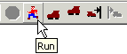
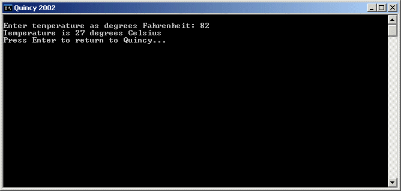

To run a program that is loaded into Quincy's editor:

Before running the program, Quincy creates a console window (unless the program is built from a Quincy project that specifies a GUI target), which serves as standard console input and output for the program. You read text from and type text into that window as if you were running the program from a DOS command line. The following screen shot shows a console window with a program that has run to completion.

Quincy always displays the message that says "Press Enter to return to Quincy..." in the console window to give you time to read the output before Quincy closes the console. Press the Enter key to close the window and return to the Quincy IDE.
To stop a program in progress before it has run to completion.
It is best not to use the procedures listed as options 3 and 4 but to use the Stop command or Stop tool button instead.